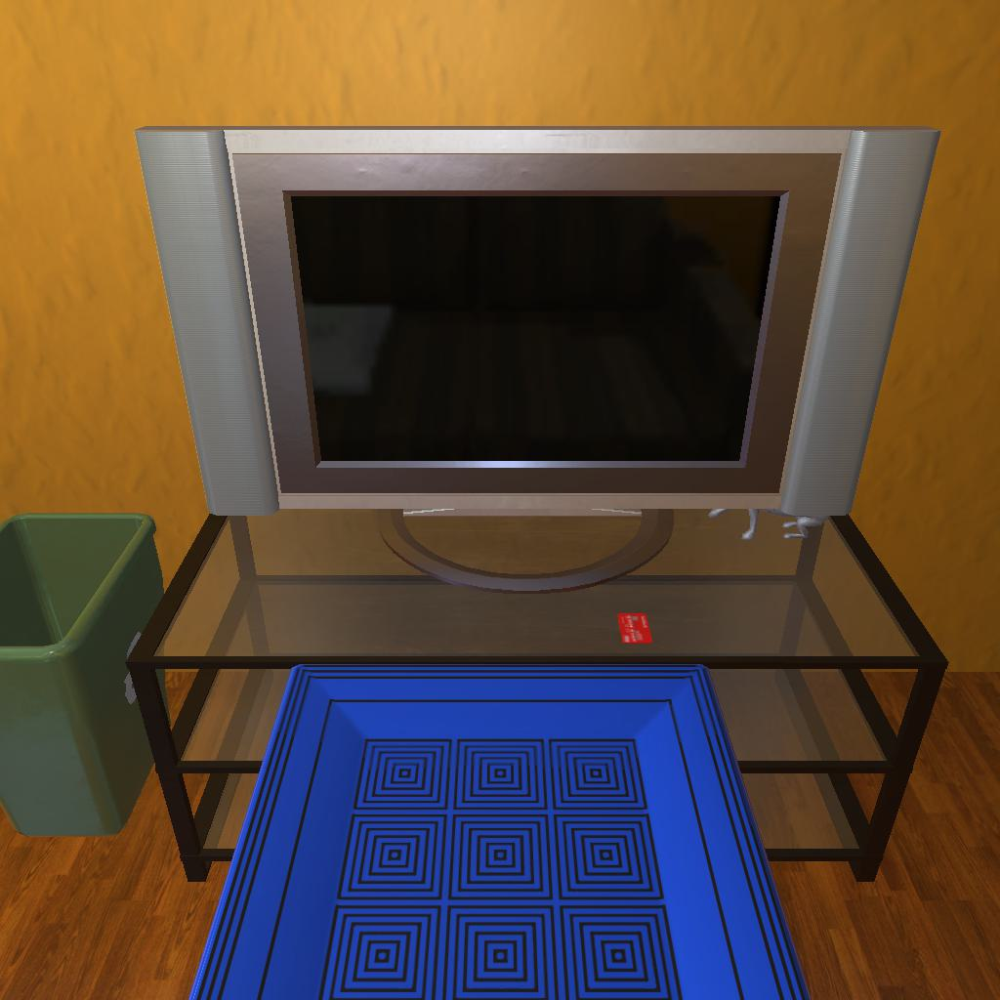

---------------------------------------------------------task: 3---------------------------------------------------------
--------------------------------------------------------------------------------------------------------------------------------------------------------------------
--------------------------------------------------------------------------------------------------------------------------------------------------------------------
Step:--------------------------------------------------------------------------12-------------------------------------------------------------------------------
----------------------------------------
VLM Prompt:
Image1:
**Instruction**
1. Analyze the provided image to identify all visible household objects, focusing on those relevant to the task description "look at plate under the floorlamp."
2. Use the analysis of the image and the task hint "The agent must find an object of the desired type, locate and turn on a light source with the desired object in-hand." to answer the question: what is the most reasonable action in the choices for the task description "look at plate under the floorlamp"?
4. Decide and write the answer using the template: The answer is: (i): , where i is the real number. If there is no desired object in the image, search every place based on **Initial Observation** to find the object. And if no one is exactly correct, choose a similar answer.
**Initial Observation**
You are in the middle of a room. Looking quickly around you, you can see armchair (1), garbagecan (1), tvstand (1), shelf (1-5), sofa (1), coffeetable (1), sidetable (1-2), drawer (1)
**Answer Choices**
(1): go to armchair 1
(2): go to garbagecan 1
(3): go to tvstand 1
(4): go to shelf 2
(5): go to sofa 1
(6): go to coffeetable 1
(7): go to sidetable 1
(8): go to sidetable 2
(9): go to drawer 1
(10): go to shelf 3
(11): go to shelf 4
(12): go to shelf 5
(13): put plate 1 in/on shelf 1
(14): examine shelf 1
**Answer**
Let's think step by step by following the instructions.
----------------------------------------
----------------------------------------
Original Response:
First, we analyze the provided image. We can see a TV on a TV stand and a blue rug on the floor. There is no visible plate or floorlamp in the image, so we need to search every place based on Initial Observation to find the object.
The task is to "look at plate under the floorlamp." We need to find a plate and a floorlamp. The hint tells us we need to locate and turn on a light source with the desired object in-hand, which means we need to find the plate first and then the floorlamp to turn on the light and look at the plate.
Based on the Initial Observation, we don't have a direct action to go to a floorlamp. However, we have various furniture items listed where a plate might be placed, such as shelves, side tables, or a coffee table. Since there is no direct mention of a floorlamp, we need to find the plate first.
The most reasonable action from the choices would be to go to places where one might expect to find a plate. A coffee table or side tables are common places where one might place a plate. However, since we do not have a direct location for the plate, we should start by examining the nearest location where a plate might be, which is the coffee table.
The answer is: (6): go to coffeetable 1
----------------------------------------
----------------------------------------
>>> Refine Original VLM Response and Get Pure Action: go to coffeetable 1
----------------------------------------
-----------------------------------------------------------------
Running time: 35.99171757698059 seconds
Total Money: 0.8530099999999999
-----------------------------------------------------------------
-----------------------------------------------------------------
Text Observation:You arrive at loc 6. On the coffeetable 1, you see a floorlamp 1, a vase 1, a pillow 1, a statue 1, a laptop 1, a remotecontrol 1, a cellphone 1, and a keychain 1.
-----------------------------------------------------------------
UNSUCCEED